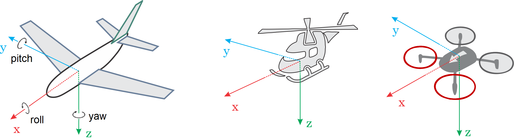

PX4 & MAVLink

- VENDOR: Kartın donanım üreticisini belirtir.
- HARDWARE_MODEL: Gerçek donanım kartı modelini seçer.
- VARIANT: Kartın belirli yapılandırmasını (bootloader, firmware çeşidi vb.) belirtir.
- VIEWER: Simülasyonu görsel olarak hangi simülatörde izleyeceğinizi seçer.
- VEHICLE_MODEL: Simülatör içinde kullanılacak araç tipini belirler.
- DEBUGGER: Hata ayıklama aracı tercihini yapar.
- WORLD: Simülasyonun geçirileceği çevre (dünya) dosyasını seçer.
_defaultkavramı isteğe bağlıdır. Bu kavram belirli özelliklerin desteklenmesi veya atlanması gibi bir ürün yazılımı yapılandırmasını belirtir.